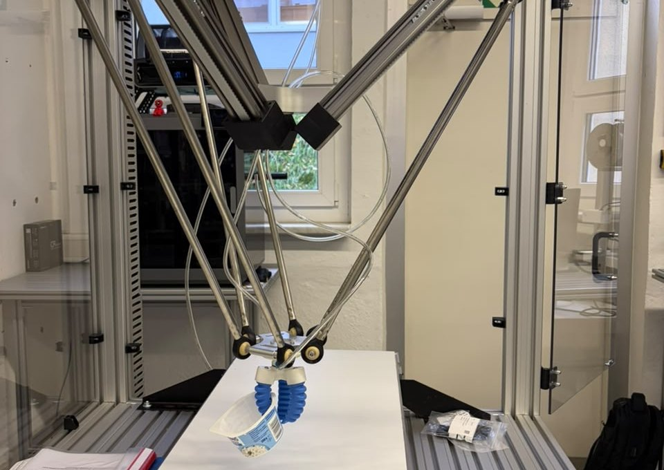

Commissioning an igus delta robot with a conveyor beltInbetriebnahme eines igus-Deltaroboters mit Förderband In progressLaufend
A lab project at Hochschule Zittau/Görlitz, part of my coursework in the double-degree program. I am commissioning a new low-cost automation cell: an igus drylin DLE-DR delta robot (660 mm diameter workspace, 3 linear axes with stepper motors and encoders) mounted on an mk conveyor belt, with igus Robot Control and an SEW frequency inverter for the belt.
Ein Laborprojekt an der Hochschule Zittau/Görlitz im Rahmen meiner Lehrveranstaltungen im Doppelabschlussprogramm. Ich nehme eine neue Low-Cost-Automatisierungszelle in Betrieb: einen igus drylin DLE-DR Deltaroboter (Arbeitsraum mit 660 mm Durchmesser, 3 Linearachsen mit Schrittmotoren und Encodern) auf einem mk-Förderband, mit igus Robot Control und einem SEW-Frequenzumrichter für das Band.
- Built with: igus Robot Control (iRC), CAN bus, Ethernet, digital I/O, pneumatic soft gripper, SEW MOVITRAC LTE-B+ inverter
- Umgesetzt mit: igus Robot Control (iRC), CAN-Bus, Ethernet, digitale E/A, pneumatischer Soft-Greifer, SEW MOVITRAC LTE-B+ Frequenzumrichter
- Context: Hochschule Zittau/Görlitz lab · October 2026 – present
- Kontext: Labor der Hochschule Zittau/Görlitz · Oktober 2026 – heute
- Status: robot commissioned (homing, jogging, Cartesian motion and programs) and matched to its 3D simulation; the soft gripper is controlled via digital outputs and a grasping program works. A bottle pick-and-place and the conveyor integration are in progress.
- Stand: Roboter in Betrieb genommen (Referenzierung, Handverfahren, kartesische Bewegung und Programme) und mit der 3D-Simulation abgeglichen; der Soft-Greifer wird über digitale Ausgänge angesteuert und ein Greifprogramm funktioniert. Ein Pick-and-Place einer Flasche und die Anbindung des Förderbands sind in Arbeit.
- Goal: integrate the delta robot, the conveyor and a camera into a working system that detects moving objects and sorts them into the right bin, as a demonstrator for the RoSa-ReCycle project.
- Ziel: Deltaroboter, Förderband und eine Kamera zu einem funktionsfähigen System zu integrieren, das bewegte Objekte erkennt und in den richtigen Behälter sortiert — als Demonstrator für das Projekt RoSa-ReCycle.
I had previously built a pick-and-place application with a Cognex camera and an xArm robot.
Zuvor habe ich bereits eine Pick-and-Place-Anwendung mit einer Cognex-Kamera und einem xArm-Roboter umgesetzt.